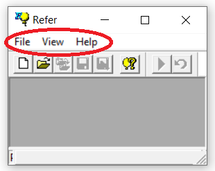
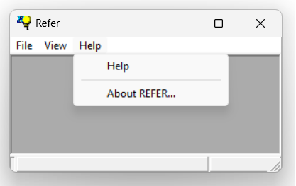

1.5.2.2 Menu Bar
The menu bar is located on the top of the main window just below the title bar.

The commands in the menu bar are context-sensitive, i.e., only valid commands are available depending on the current state of the execution flow. Since the process is sequential, child tasks will not be accessible until their parent tasks have been executed and valid output data has been generated.
Commands are included in dropdown(1) menus:

NOTES:
(1) A dropdown menu contains a list of commands that appear only when the user actively engages with the menu and disappear once the user disengages from the menu.